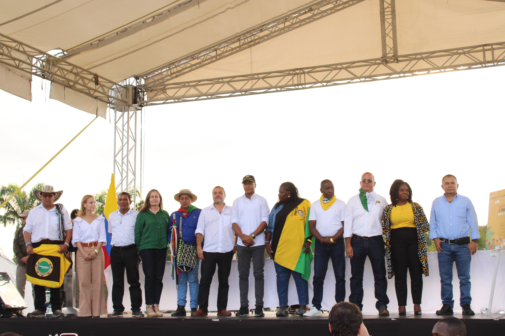
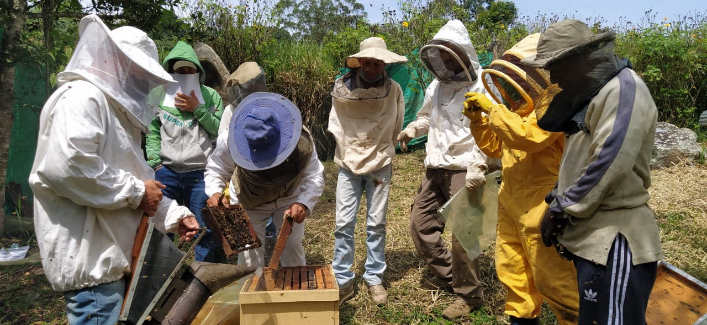
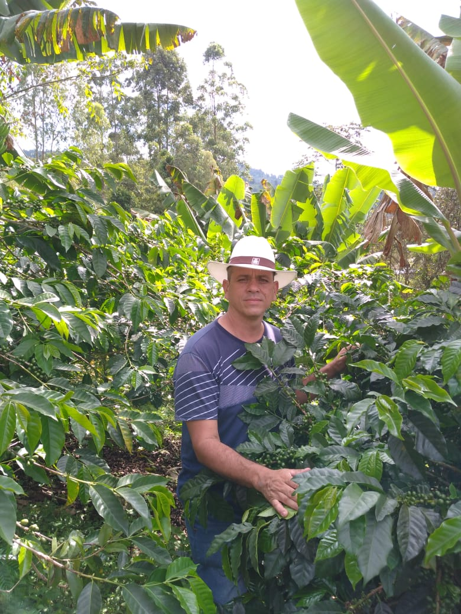

Logros de ARUC DE COLOMBIA
- Creación del Observatorio de Derechos Humanos del Campesino de ARUC DE COLOMBIA.
- Reconocimiento y posicionamiento político de la ARUC DE COLOMBIA.
- Pertenecer a la Mesa de Diálogo Social del Norte del Cauca (Resolución 1961).
- Acuerdo estratégico para el fortalecimiento y acompañamiento con el Instituto de Estudios Interculturales de la Universidad Javeriana.
- Ser una de las cinco organizaciones que conforman el Consejo Interétnico Intercultural del Norte de Cauca (CTIINC).
- Firma del convenio Público-Privado-Comunitario "Estrategia Norte del Cauca" para fortalecer las cadenas productivas de café, panela y cacao.
- Acuerdo con el SENA para capacitar y certificar a los asociados.
- Fortalecimiento y acompañamiento a las organizaciones municipales que conforman la ARUC DE COLOMBIA.
- Interlocución con el Gobierno y las agencias del Ministerio de Agricultura, ADR y ANT.
- Trabajo articulado para fortalecer la organización con la Mesa Colombia País Vasco – PNUD.

Líneas Productivas de la ARUC DE COLOMBIA



- ☕ Café
- 🌱 Yuca
- 🌿 Cannabis
- 🏞️ Eco turismo
- 🌰 Sacha inchi
- 🎋 Caña panelera
- 🐔 Avicultura
- 🐝 Apicultura
- 🐟 Piscicultura
- ♻️ Agroecología
- 🥕 Hortofrutícola
- 🐄 Ganadería